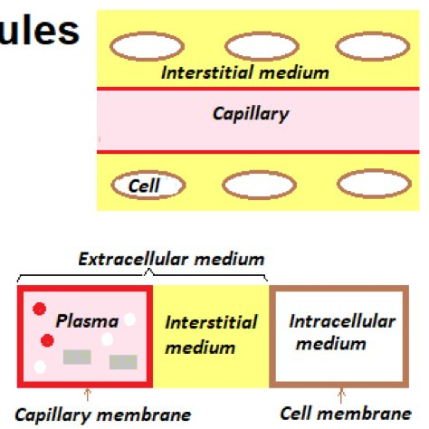
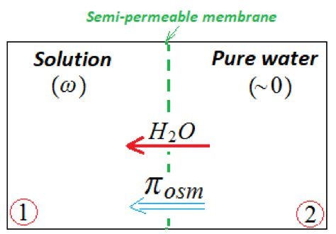
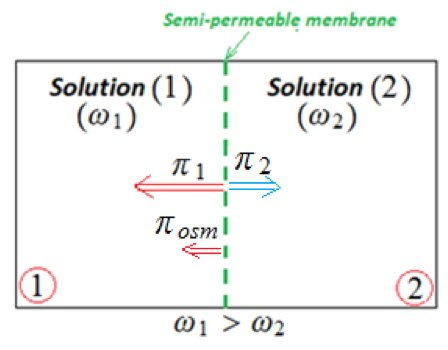

S1 · Biophysics · Summary · Part 4 of 5
Biophysics of solutions — 4
- Essentials
- Membranes
- Colligative properties
- Ebullioscopy
- Cryoscopy
- Osmotic pressure
- Tonicity
- Exam traps
- Self-check
If you remember only this
- Membranes: dialysis (water + small molecules/ions, not macromolecules ≥ 10 kg), semi-permeable (water only), selective/biological (water + certain molecules).
- Colligative properties depend only on the number of solute particles (osmolarity ω).
- Raoult: boiling point rises ΔTvap = Keb·ω (> 0); freezing point drops ΔTsol = −Kcr·ω (< 0).
- Osmosis = diffusion of water through a semi-permeable membrane, toward the more concentrated side. Van 't Hoff: π = ωRT (Pa, with ω in osmol/m³); between two solutions π = (ω₁ − ω₂)RT.
- Isotonic (π = 0) + semi-permeable ⇒ iso-osmolar. Isotonic + biological membrane ⇒ not necessarily iso-osmolar (freely diffusing solutes like urea are not osmotically active).
- Partly permeable membrane: π = σωRT, σ = 0 dialysis, σ = 1 semi-permeable.
F. Types of membranes slide 19
Water and solutes cross cellular and capillary membranes, of three types:
| Membrane | Lets through |
|---|---|
| Dialysis | Water and small molecules or ions (Na⁺, K⁺, Cl⁻…); not macromolecules (M ≥ 10 kg) |
| Semi-permeable | Water only |
| Selective (biological) | Water and certain molecules |

G. Colligative properties slides 19–22 2022-23 · 2024-25 · 2025-26
Physico-chemical properties of solutions that depend only on the number of solute particles. Solution = solvent + solute.
1. Ebullioscopic elevation
ΔTvap = Ts − T₀ = Keb × ω > 0
T₀ / Ts = vaporization temperature of the solvent / solution · ΔT in °C · ω in osmol/L · Keb in °C·L/osmol
2. Cryoscopic depression
ΔTsol = Ts − T₀ = −Kcr × ω < 0
T₀ / Ts = freezing temperature of the solvent / solution · water (plasma): Kcr = 1.86 °C·L/osmol ·
normal blood: ΔT = −0.56 °C
Exercise 6 (slides 21–22): blood alcohol
Intoxicated subject ΔT₂ = −0.62 °C; normal ΔT₁ = −0.56 °C; Kcr = 1.86; Malcohol = 46 g/mol.
ΔT₂ = ΔT₁ − Kcr·ωalc ⇒ ωalc = (−0.62 + 0.56)/(−1.86) = 0.032 osmol/L; ethanol is a non-electrolyte → C = 0.032 mol/L → 0.032 × 46 = 1.48 g/L.
ΔT₂ = ΔT₁ − Kcr·ωalc ⇒ ωalc = (−0.62 + 0.56)/(−1.86) = 0.032 osmol/L; ethanol is a non-electrolyte → C = 0.032 mol/L → 0.032 × 46 = 1.48 g/L.
Exam method — degree of dissociation from the freezing point 3 years
ω = |ΔT| / Kcr, then solve ω = [1 + α(β − 1)]C for α.
2022-23: CaCl₂ 0.2 mol/L, −0.65 °C → ω = 0.349 → 0.2(1 + 2α) = 0.349 → α = 0.37.
2024-25: CaCl₂ 0.1, −0.45 °C → ω = 0.242 → α = 0.71.
2025-26: Al₂(SO₄)₃ 0.1 (β = 5), −0.64 °C → ω = 0.344 → 0.1(1 + 4α) = 0.344 → α = 0.61.
2022-23: CaCl₂ 0.2 mol/L, −0.65 °C → ω = 0.349 → 0.2(1 + 2α) = 0.349 → α = 0.37.
2024-25: CaCl₂ 0.1, −0.45 °C → ω = 0.242 → α = 0.71.
2025-26: Al₂(SO₄)₃ 0.1 (β = 5), −0.64 °C → ω = 0.344 → 0.1(1 + 4α) = 0.344 → α = 0.61.
3. Osmotic pressure slides 22–24 2022-23 · 2023-24 · 2024-25 · 2025-26
Osmosis = diffusion of water through a semi-permeable membrane. It happens under a force, the osmotic pressure πosm, which measures a solution's tendency to draw in water.
πosm = ω R T (van 't Hoff) [π] = Pa
Two solutions, ω₁ > ω₂: πosm = Δπ = (ω₁ − ω₂) R T; water flows (2) → (1) until the osmolarities are equal


Exercise 7 (slide 24)
25 °C, (1) NaCl 5.85 g/L → ω₁ = 2 × 0.1 = 0.2 osmol/L = 0.2 × 10³ osmol/m³; (2) glucose 18 g/L → ω₂ = 0.1 × 10³ osmol/m³.
ω₁ > ω₂ → water flows (2) → (1); π = 0.1 × 10³ × 8.31 × 298 = 248 kPa.
ω₁ > ω₂ → water flows (2) → (1); π = 0.1 × 10³ × 8.31 × 298 = 248 kPa.
Exam calculations
2023-24: 0.104 osmol/L vs pure water, 27 °C: π = 104 × 8.31 × 300 = 259 kPa = 2.56 atm.
2024-25: 0.214 vs 0.115 osmol/L, 27 °C: π = 99 × 8.31 × 300 = 2.47 × 10⁵ Pa = 2.47 bar.
2025-26 (movable membrane): glucose 0.15 vs Na₂SO₄ 0.1 mol/L (ω = 0.3) → water goes into the Na₂SO₄ side, so the membrane moves from B to A until the osmolarities are equal (key: 16.7 cm, from the figure's dimensions).
2024-25: 0.214 vs 0.115 osmol/L, 27 °C: π = 99 × 8.31 × 300 = 2.47 × 10⁵ Pa = 2.47 bar.
2025-26 (movable membrane): glucose 0.15 vs Na₂SO₄ 0.1 mol/L (ω = 0.3) → water goes into the Na₂SO₄ side, so the membrane moves from B to A until the osmolarities are equal (key: 16.7 cm, from the figure's dimensions).
Non-diffusible particles move water and create osmotic pressure: they are osmotically active.
Tonicity slides 25–26
| Situation | Name |
|---|---|
| πosm = 0 ⇔ π₁ = π₂ ⇔ no water flow | (1) and (2) isotonic (iso-osmotic) |
| π₁ < π₂ | (1) hypotonic, (2) hypertonic |
| Isotonic + semi-permeable membrane | ω₁ = ω₂: iso-osmolar |
| Isotonic + biological membrane | Not necessarily iso-osmolar |
Example: red blood cell (slides 25–26)
Erythrocyte 300 mosmol/L in a solution of 300 mosmol/L NaCl + 100 mosmol/L urea (ω₂ = 400). Urea crosses the membrane freely → it behaves
like water, not osmotically active → π₂ = ωNaClRT = 300RT = π₁. Isotonic but not iso-osmolar (300 ≠ 400).
πosm = σ ω R T (membrane partially permeable to the solute)
σ = reflection coefficient = osmoles that don't cross / initial osmoles = impermeable pore area / total pore area ·
0 ≤ σ ≤ 1 · dialysis σ = 0 · semi-permeable σ = 1 · totally permeable ⇒ π = 0 · several solutes: π = Σ σiωiRT
Exam traps
EMD1 2022-23 Q13 — only C was true
- "Osmosis is the transfer of water through a semi-permeable membrane" — true.
- "Reverse osmosis is the transfer of water through a dialyzing membrane" — false.
- "Two iso-osmotic solutions have the same molar concentration" — false: same osmolarity, not molarity (NaCl 0.1 ≈ glucose 0.2).
- "Two isotonic solutions automatically have the same osmolarities" — false (biological membrane, e.g. urea).
Calculation traps
- π = ωRT needs ω in osmol/m³ (× 1000 from osmol/L) and T in K → result in Pa.
- Cryoscopic ΔT is negative: ω = |ΔT|/K.
- Al₂(SO₄)₃ → 2Al³⁺ + 3SO₄²⁻: β = 5, so ω = C(1 + 4α).
- Water moves toward the higher osmolarity, not away from it.
Self-check
Dialysis vs semi-permeable vs selective membrane?
Dialysis: water + small molecules/ions, not macromolecules. Semi-permeable: water only. Selective: water + certain molecules.
What is a colligative property?
One that depends only on the number of solute particles.
Raoult's laws for boiling and freezing?
ΔTvap = Kebω (> 0); ΔTsol = −Kcrω (< 0).
Normal cryoscopic depression of blood, and Kcr of plasma water?
−0.56 °C; 1.86 °C·L/osmol.
Van 't Hoff's law?
π = ωRT (Pa); between two solutions π = (ω₁ − ω₂)RT.
Which way does water flow by osmosis?
From the lower to the higher osmolarity.
Why is an RBC in 300 NaCl + 100 urea isotonic?
Urea crosses freely, isn't osmotically active; only NaCl counts: 300 = 300.
σ for a dialysis and a semi-permeable membrane?
0 and 1.
CaCl₂ 0.1 mol/L freezes at −0.45 °C: α?
ω = 0.45/1.86 = 0.242 = 0.1(1 + 2α) → α = 0.71.